Campaign Example · DCO Variant Pool · OVERVIEW
The grape harvest of Grappolotto and Foglina
Grappolotto and Foglina — a grape-bunch character and his companion in the guise of a vine leaf — are the reference pair for promoting the professional wooden corkscrew (see the image below). The story covers one season in the characters' lives: the grape harvest, through pressing, to bottling. The simple story follows the same measure as the earlier Pannocchino e Spighetta. Grappolotto and Foglina remain an illustration in service of the mechanism driving the story in The Engine: generation, control, export, not an actual client campaign. A note on roles: I wrote the brief for this story myself, since the client is only simulated, to show how the engine works — an engine that is independent of the cast, the settings, the brand and the stories, which in a real workflow have already been decided by other professional roles.
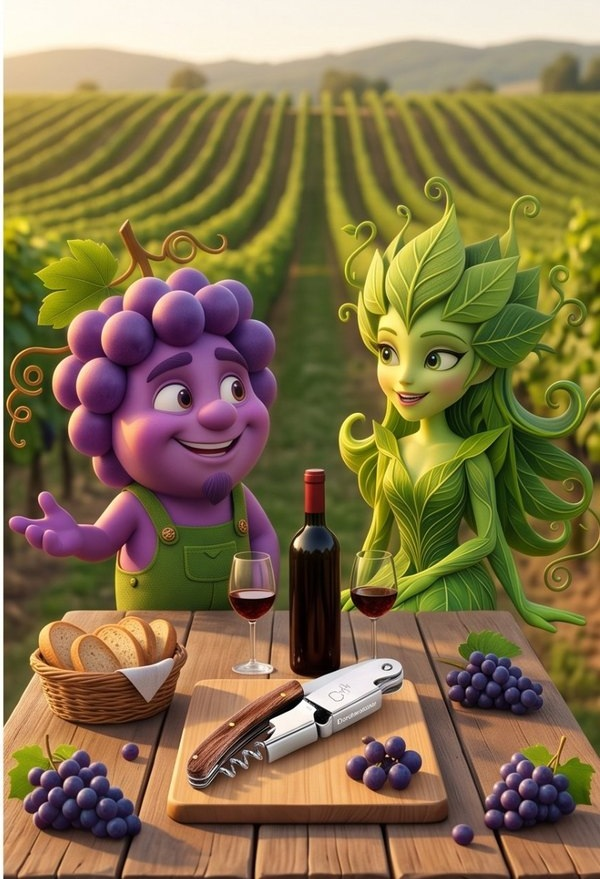
Prologue — the keyframe
The story below reuses, as its anchor, the same reference pair already staged in the vineyard background plate in The Engine: generation, control, export (Chapter 02) — the same two faces the judge-and-correct loop there has to keep steady. Reusing it here, rather than generating a new one, is itself part of the demonstration: the pair was locked once, for a different post, and the lock holds.

Story — the harvest
Eight beats, start to finish: a full day's harvest, an honest ellipsis for the months a real wine needs to age (broken once, on purpose, for a quiet private moment), an evening bottling, a callback to the product that opened the story, and a toast one year on. If identity retention survives bare feet in a stomping vat, a kiss among the barrels and a year-long time skip, it survives most of what a real campaign would ask of it.
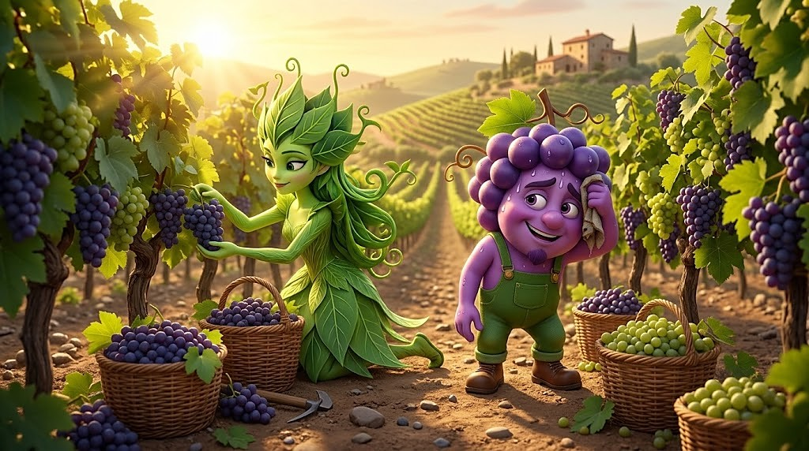
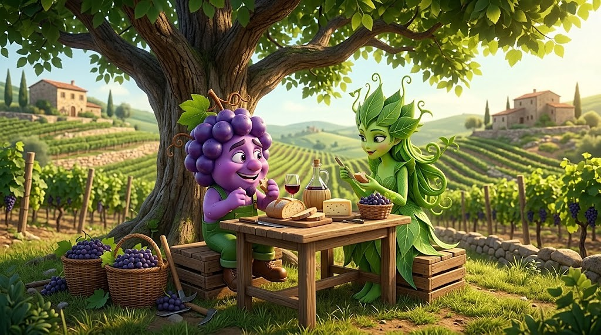
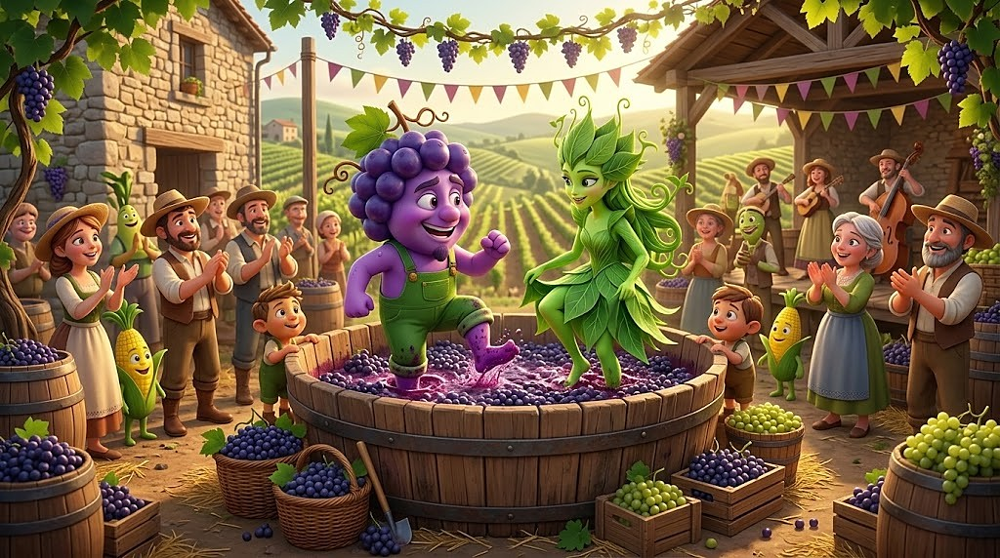
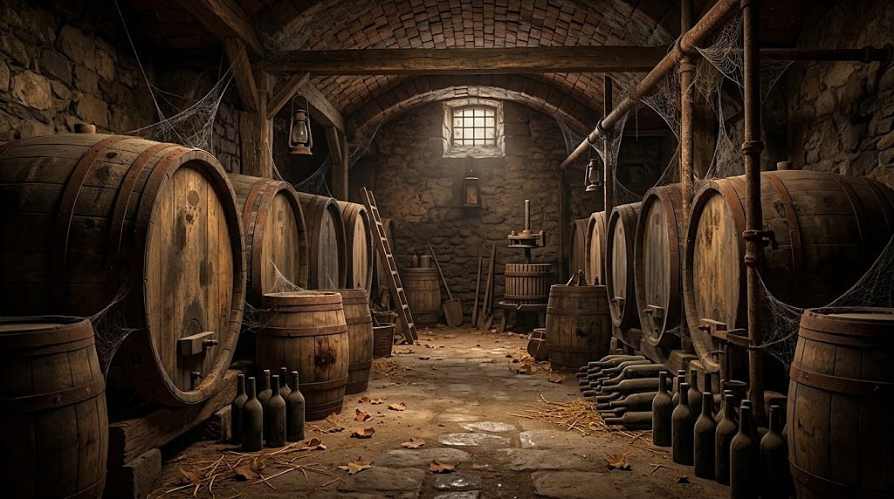
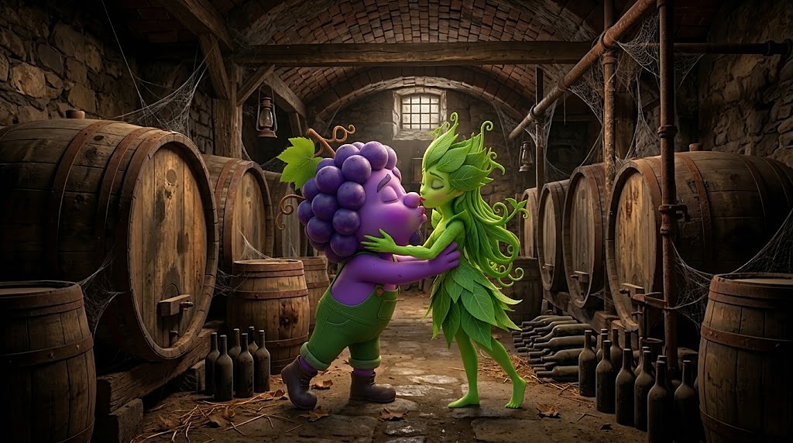
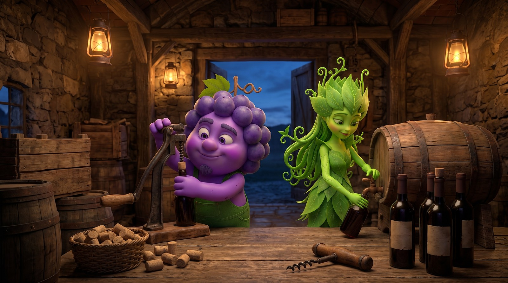
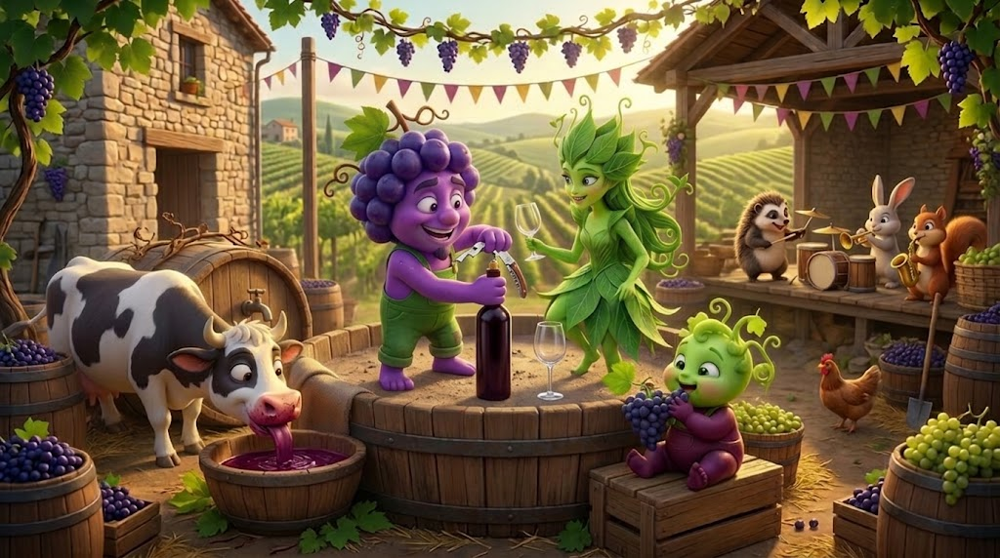
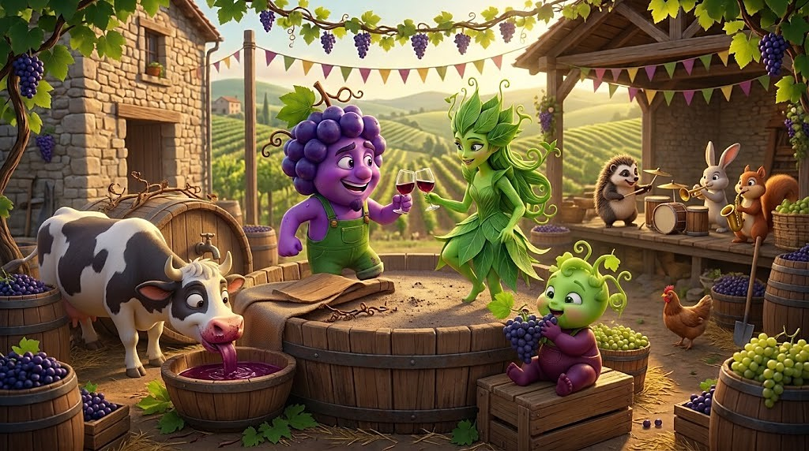
Other scripts the same setup could run
Before settling on the sequence above, the same primitives — the locked pair, the vineyard and cellar, the corkscrew — went through a few other ways the same harvest could be told. None of these were turned into a storyboard.
- A storm-hit version — the harvest rushed indoors halfway through, baskets abandoned between the rows, testing whether identity holds through sudden rain and panic rather than calm, sunny work.
- A night-harvest version, picked by lantern light under a full moon — some producers do actually harvest at night to keep the grapes cool, so this one is closer to real practice than the others.
- A multigenerational version — Foglina's grandmother, a second vine-leaf character never drawn before, supervising the stomping and passing down the old technique.
- A village-competition version — rival vats stomping side by side at a harvest festival, Grappolotto and Foglina racing another pair instead of working alone.
- A single-shot version with no harvest at all: just the toast at the end, the whole year compressed into one glass raised — the minimum story this same reference pair can still tell.
The pipeline mechanism behind it — the same judge-and-correct loop demonstrated on this exact pair in The Engine: generation, control, export (Chapters 04–05) — is what kept Grappolotto and Foglina on-model across eight very different settings: a plain product shot opening the story, a sunrise field, a shaded lunch table, a stomping vat, an empty cellar turned private moment, an evening bottling room, a harvest-festival celebration where the product reappears in the mascots' own hands, and finally a year-later toast.
Each approved shot of this story leaves as a row in a feed, labelled by beat, slogan and format, the same way the Pannocchino e Spighetta stories do: the export that does it is chapter 06 of The Engine: generation, control, export.
Simulated engine output — the variant pool
A worked example of what the engine's last two stages — formats (Chapter 07) and export (Chapter 06), see The Engine: generation, control, export — would actually produce from this story, in the same spirit as the cake-brand example in Pannocchino and Spighetta. Starting from the opening harvest shot above, the engine stages a small pool of labelled variants for Cavatappi Professionale, re-cropped into the aspect ratios a real campaign would need; the weather axis — the same row of vines under a clear morning versus caught in the rain — runs across the set. The two slogans below are original, written to rhyme in Italian for this campaign, and adapted — not translated literally — to keep a rhyme in English too, a choice explained in the note under the grid. The four renders below are real crops from three actual stills — clear and rainy versions of the harvest, plus the year-later toast — each one labelled with its variant tags.
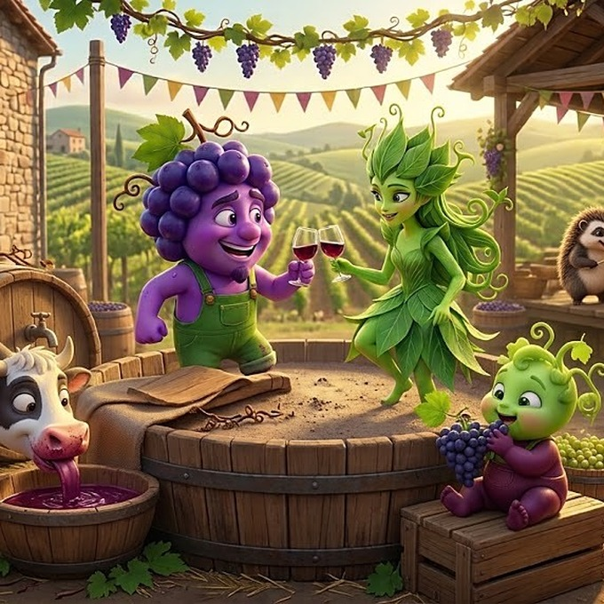
format:1:11 · event:harvest · weather:clear · slogan:filari-tino “With Foglina among the rows and Grappolotto down by the vine, the harvest gives us a wonderful wine!”
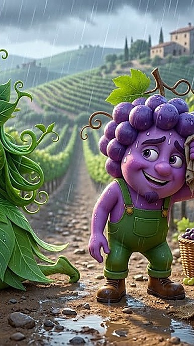
format:9:162 · event:harvest · weather:rain · slogan:mucca-germoglio “Between a cow who's had one booze too many, and a cheeky little vine, Grappolotto and his girl are raising a glass of wine!”
format:16:93 · event:harvest · weather:clear · slogan:filari-tino “With Foglina among the rows and Grappolotto down by the vine, the harvest gives us a wonderful wine!”
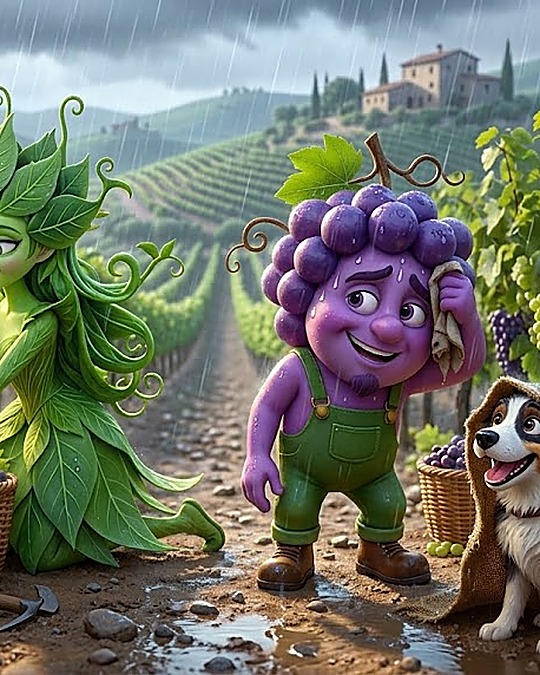
format:4:54 · event:harvest · weather:rain · slogan:mucca-germoglio “Between a cow who's had one booze too many, and a cheeky little vine, Grappolotto and his girl are raising a glass of wine!”
Each labelled image above is exactly one row of the manifest described in chapter 06 of The Engine: generation, control, export — here we simulate that formatting/export stage by hand, using two real stills instead of a generated render pool. On the slogans: both were written in Italian first, each built around one internal rhyme ("…tino, …vino" in the first, "…birichino, …vino" in the second). The English versions keep the same device by rhyming on "vine"/"wine" instead, which is why neither reads as a literal translation of the other — a free adaptation is the right call whenever the point of a line is the rhyme rather than the exact wording, and it's the manifest's review_status field that records that choice instead of leaving it implicit.
Export: Manifest rows
The 11 fields every row carries (see chapter 06 of The Engine: generation, control, export for what each one is for), filled in for the sunny 1:1 variant above:
asset_id : cavatappi-professionale-vendemmia-raccolta-filari-tino-1x1
brand : anonymous
product_line : Cavatappi Professionale
story : Grappolotto e Foglina bring in the harvest
beat : harvest
narrative_role : opening
cast : Grappolotto, Foglina
format : 1:1
reserved_zone : bottom 18% strip (y: 0.82–1.00), clear of both faces
variant_labels : [event:harvest, weather:clear, slogan:filari-tino]
qa_status : passed first try
review_status : approved, EN rhyme adaptation noted
This Manifest is consumed by an ad-serving/DCO platform — the trafficking layer (Meta, Google/DV360, or an agency's own DSP) that actually publishes ads and swaps creative in real time. It reads variant_labels and format to pick the right row for each delivery slot and targeting rule; the engine itself never talks to the ad platform directly, only through this Manifest.
- Square (1:1) — the classic Instagram/Facebook feed unit, also used by Pinterest pins and Google Display's square ad slot. ↩
- Vertical (9:16) — full-screen vertical video: Instagram/Facebook Stories and Reels, TikTok, YouTube Shorts, Snapchat. ↩
- Widescreen (16:9) — YouTube in-stream/pre-roll, Facebook and LinkedIn link ads, and most CTV/programmatic display inventory. ↩
- Portrait (4:5) — Instagram and Facebook's taller feed unit, now the recommended default for single-image feed ads on both platforms. ↩